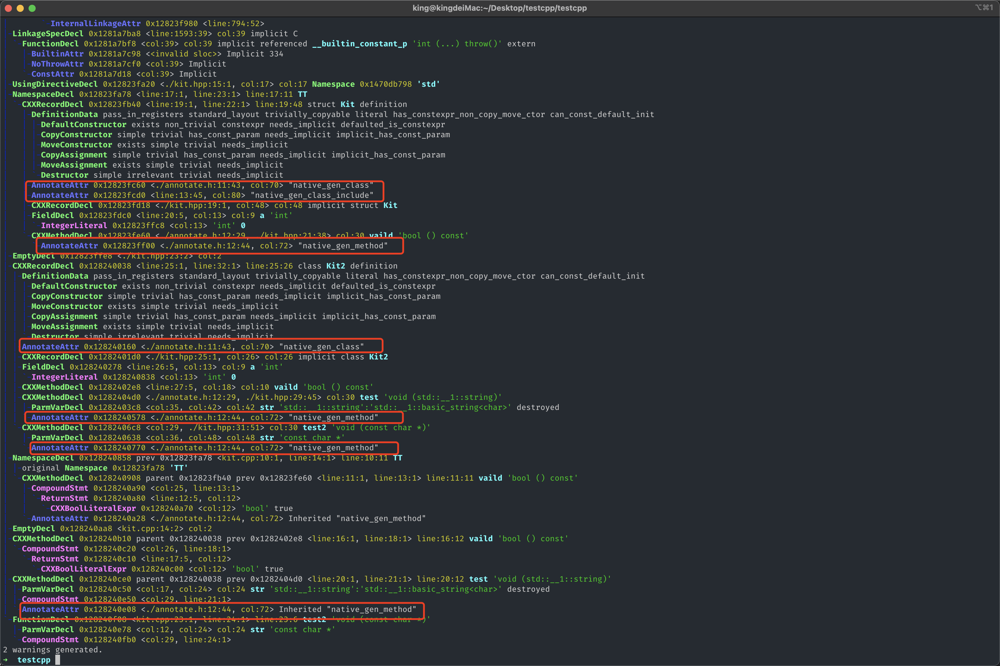
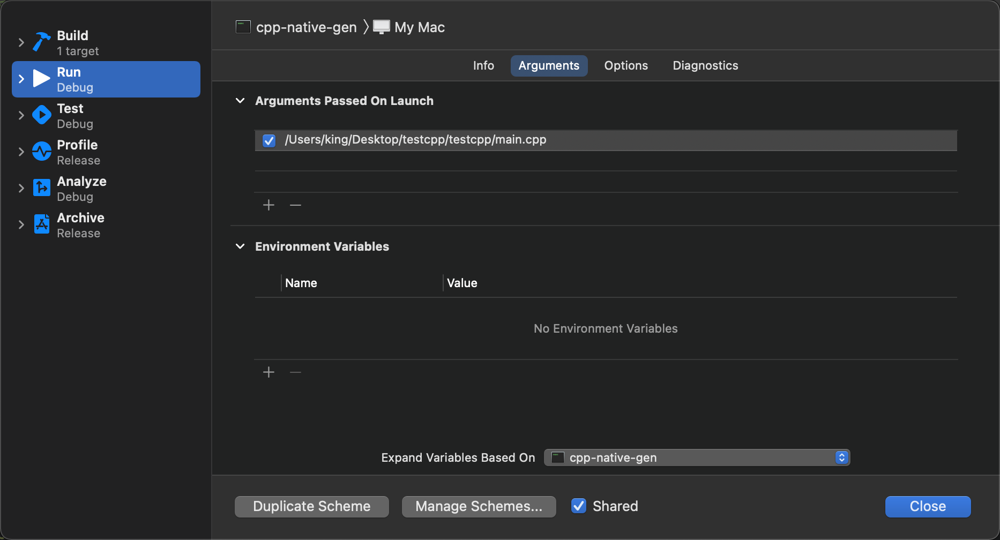
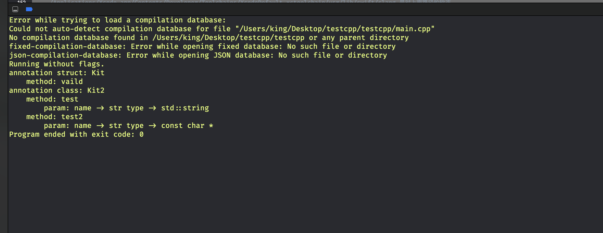

基于 LibTooling 生成 C++ 的 Objective-C++ 包装接口想法初步验证
产生这个想法,源于一位大佬问我
Swift 调用 C++ 的解决方案是啥?
已知方案
C包装C++Objective-C++包装C++
上面两种方式都需收开发人员手动去写对应的包装接口,作为一个新生代的农民工,应该想办法自动的完成这件事,为自己挤出更多的摸鱼划水的时间。
如何自动生成？
- 之前在研究一个
动态二维码code时,一开始是用Rust实现了一遍,然后通过Rust生成ffi接口,以供iOSAndroid使用。Rust通过在函数使用extern "C"#[no_mangle]。然后通过cbindgen这类工具即可自动生成对应的ffi接口 - 所以我就想，能不能用类似的方式，在
C++的类，函数上加点料，然后再通过一个工具，找出这些，自动生成对应的Objective-C++- 答案是可以的， 可以利用
__attribute__((annotate())) - 这个料又如何读出来呢？
- 答案是可以的， 可以利用
AST
- 示例
#ifndef annotate_h
#define annotate_h
#define GEN_ANNOTATE_CLASS __attribute__((annotate("native_gen_class")))
#define GEN_ANNOTATE_METHOD __attribute__((annotate("native_gen_method")))
#define GEN_ANNOTATE_INCLUDE __attribute__((annotate("native_gen_class_include")))
#endif /* annotate_h */
#ifndef kit_hpp
#define kit_hpp
#include <string>
#include "annotate.h"
using namespace std;
namespace TT {
struct GEN_ANNOTATE_CLASS GEN_ANNOTATE_INCLUDE Kit {
int a = 0;
GEN_ANNOTATE_METHOD bool vaild() const;
};
}; // namespace TT
class GEN_ANNOTATE_CLASS Kit2 {
int a = 0;
bool vaild() const;
GEN_ANNOTATE_METHOD void test(string str);
GEN_ANNOTATE_METHOD void test2(const char *str);
};
#endif /* kit_hpp */
- 打印AST
clang++ -Xclang -ast-dump -fsyntax-only kit.cpp

- 可以看到图中的
AnnotateAttr`就是我们的加料
LibTooling
通过
LibTooling解析源码AST,只要找到符合的AST我们就生成对应的Objective-C++源码， 具体怎么做呢？
- 下载
llvm源码
mkdir LLVM
cd LLVM
wget https://github.com/llvm/llvm-project/archive/refs/tags/llvmorg-13.0.0-rc1.zip
unzip llvmorg-13.0.0-rc1.zip
-
创建工程
- 在解压后的源码目录
clang/examples目录下新建一个文件夹，如CppNativeGen clang/examples/CMakeLists.txt追加一行add_subdirectory(CppNativeGen)CppNativeGen目录结构如下
CppNativeGen ├── CMakeLists.txt └── CppNativeGen.cppCppNativeGen/MakeLists.txt内容如下
add_clang_executable(cpp-native-gen CppNativeGen.cpp ) target_link_libraries(cpp-native-gen PRIVATE clangAST clangBasic clangDriver clangLex clangParse clangSema clangFrontend clangSerialization clangTooling clangToolingCore ) - 在解压后的源码目录
-
生成
Xcode工程- 辅助脚本
build.sh
#!/usr/bin/env bash set -e set -o pipefail set -u ROOT_DIR=`pwd` SOURCE_CODE_DIR=$ROOT_DIR/llvm-project-llvmorg-13.0.0-rc1 BUILD_DIR=$ROOT_DIR/build_dir XCODE_BUILD_DIR=$BUILD_DIR/build_xcode XCODE_OUT_DIR=$BUILD_DIR/build_xcode_out function generate_xcode_project() { cd $XCODE_BUILD_DIR cmake -G "Xcode" \ -DCMAKE_OSX_DEPLOYMENT_TARGET="10.14" \ -DCMAKE_OSX_SYSROOT="macosx" \ -DCMAKE_OSX_ARCHITECTURES='x86_64;arm64' \ -DLLVM_TARGETS_TO_BUILD="ARM;X86" \ -DCMAKE_BUILD_TYPE=Debug \ -DCMAKE_INSTALL_PREFIX=$XCODE_OUT_DIR \ -DLLVM_ENABLE_PROJECTS="clang" \ $SOURCE_CODE_DIR/llvm } function clear_build() { echo "clear build dir" rm -rf $BUILD_DIR } function onCtrlC () { clear_build exit 0 } trap 'onCtrlC' INT mkdir -p $XCODE_BUILD_DIR generate_xcode_project- 生成工程
chmod +x ./build.sh # 只需要执行一次 ./build.sh - 辅助脚本
-
打开
build_dir/build_xcode/LLVM.xcodeproj- 打开后会提示创建
Scheme, 选择手动， 将cpp-native-gen加上即可
- 打开后会提示创建
-
CppNativeGen.cpp源码
//===- CppNativeGen.cpp ---------------------------------------------===//
//
// Part of the LLVM Project, under the Apache License v2.0 with LLVM Exceptions.
// See https://llvm.org/LICENSE.txt for license information.
// SPDX-License-Identifier: Apache-2.0 WITH LLVM-exception
//
//===----------------------------------------------------------------------===//
//
// Example clang plugin which simply prints the names of all the top-level decls
// in the input file.
//
//===----------------------------------------------------------------------===//
#include "clang/AST/AST.h"
#include "clang/AST/ASTConsumer.h"
#include "clang/AST/RecursiveASTVisitor.h"
#include "clang/Frontend/CompilerInstance.h"
#include "clang/Frontend/FrontendActions.h"
#include "clang/Frontend/FrontendPluginRegistry.h"
#include "clang/Sema/Sema.h"
#include "clang/Tooling/CommonOptionsParser.h"
#include "clang/Tooling/Tooling.h"
#include "llvm/Support/CommandLine.h"
#include "llvm/Support/Signals.h"
#include "llvm/Support/raw_ostream.h"
using namespace clang;
namespace {
static llvm::StringRef AnnotationClassName{"native_gen_class"};
static llvm::StringRef AnnotationMethodName{"native_gen_method"};
class CppNativeGenConsumer : public ASTConsumer {
CompilerInstance &Instance;
std::set<std::string> ParsedTemplates;
public:
CppNativeGenConsumer(CompilerInstance &Instance,
std::set<std::string> ParsedTemplates)
: Instance(Instance)
, ParsedTemplates(ParsedTemplates) {}
bool HandleTopLevelDecl(DeclGroupRef DG) override {
for (DeclGroupRef::iterator i = DG.begin(), e = DG.end(); i != e; ++i) {
const Decl *D = *i;
// TODO: NamespaceDecl CXXRecordDecl 需要考虑 嵌套
if (const NamespaceDecl *NSD = dyn_cast<NamespaceDecl>(D)) {
for (auto I : NSD->decls()) {
if (const CXXRecordDecl *RD = dyn_cast<CXXRecordDecl>(I)) {
HandleCXXRecordDecl(RD);
}
}
} else if (const CXXRecordDecl *RD = dyn_cast<CXXRecordDecl>(D)) {
HandleCXXRecordDecl(RD);
}
}
return true;
}
void HandleCXXRecordDecl(const CXXRecordDecl *RD) {
if (RD->hasAttr<AnnotateAttr>()) {
AnnotateAttr *attr = RD->getAttr<AnnotateAttr>();
if (attr->getAnnotation() == AnnotationClassName) {
llvm::errs() << (RD->isStruct() ? "annotation struct: " : "annotation class: ") << RD->getNameAsString() << "\n";
for (auto I : RD->decls()) {
if (const CXXMethodDecl *MD = dyn_cast<CXXMethodDecl>(I)) {
HandleCXXMethodDecl(MD);
}
}
}
}
}
void HandleCXXMethodDecl(const CXXMethodDecl *MD) {
// const CXXRecordDecl *RD = MD->getParent();
if (MD->hasAttr<AnnotateAttr>()) {
AnnotateAttr *attr = MD->getAttr<AnnotateAttr>();
if (attr->getAnnotation() == AnnotationMethodName) {
llvm::errs() << "\tmethod: " << MD->getNameAsString() << "\n";
auto numParams = MD->getNumParams();
for (unsigned int i = 0; i < numParams; i++) {
auto PD = MD->getParamDecl(i);
// PD->dump();
QualType type = PD->getType();
// if (true && !type.isNull()) {
// // If the type is sugared, also dump a (shallow) desugared type.
// SplitQualType D_split = type.getSplitDesugaredType();
// if (T_split != D_split)
// llvm::errs() << ":'" << QualType::getAsString(D_split, PrintPolicy) << "'";
// }
llvm::errs() << "\t\tparam: name -> " << PD->getNameAsString() << " type -> " << QualType::getAsString(type.split(), PrintingPolicy{{}}) << "\n";
}
}
}
}
};
class CppNativeGenAction : public PluginASTAction {
std::set<std::string> ParsedTemplates;
protected:
std::unique_ptr<ASTConsumer> CreateASTConsumer(CompilerInstance &CI,
llvm::StringRef) override {
// 忽略警告
CI.getDiagnostics().setClient(new IgnoringDiagConsumer());
return std::make_unique<CppNativeGenConsumer>(CI, ParsedTemplates);
}
bool ParseArgs(const CompilerInstance &CI,
const std::vector<std::string> &args) override {
return true;
}
void PrintHelp(llvm::raw_ostream &ros) {
ros << "Help for CppNativeGen plugin goes here\n";
}
};
} // namespace
// static FrontendPluginRegistry::Add<CppNativeGenAction>
// X("cpp-native-gen", "print function names");
using namespace clang;
using namespace tooling;
using namespace llvm;
static llvm::cl::OptionCategory OptsCategory("cpp-native-gen");
int main(int argc, const char **argv) {
// sys::PrintStackTraceOnErrorSignal(argv[0], false);
// PrettyStackTraceProgram X(argc, argv);
auto ExpectedParser =
CommonOptionsParser::create(argc, argv, OptsCategory);
if (!ExpectedParser) {
llvm::errs() << ExpectedParser.takeError();
return 1;
}
CommonOptionsParser &OptionsParser = ExpectedParser.get();
ClangTool Tool(OptionsParser.getCompilations(),
OptionsParser.getSourcePathList());
// auto cmd = OptionsParser.getCompilations().getCompileCommands(OptionsParser.getSourcePathList().front()).front();
/*
/Applications/Xcode.app/Contents/Developer/Toolchains/XcodeDefault.xctoolchain/usr/lib/clang/xxx
/Applications/Xcode.app/Contents/Developer/Toolchains/XcodeDefault.xctoolchain/usr/lib/swift/clang 是对上面路径的软连
*/
Tool.appendArgumentsAdjuster(getInsertArgumentAdjuster(
"-I/Applications/Xcode.app/Contents/Developer/Toolchains/XcodeDefault.xctoolchain/usr/lib/swift/clang/include",
ArgumentInsertPosition::END));
Tool.appendArgumentsAdjuster(getInsertArgumentAdjuster(
"-I/Applications/Xcode.app/Contents/Developer/Toolchains/XcodeDefault.xctoolchain/usr/include/c++/v1",
ArgumentInsertPosition::END));
Tool.appendArgumentsAdjuster(getInsertArgumentAdjuster(
"-I/Applications/Xcode.app/Contents/Developer/Platforms/MacOSX.platform/Developer/SDKs/MacOSX.sdk/usr/include",
ArgumentInsertPosition::END));
return Tool.run(clang::tooling::newFrontendActionFactory<CppNativeGenAction>().get());
}
- 在
cpp-native-genEdit Scheme添加源码文件  - 运行即可看到控制台输出如下 
剩下的就是，利用上面步骤收集的信息然后生成对应的
Objective-C++源码，当然其中还是有很多细节的，比如参数类型的转换